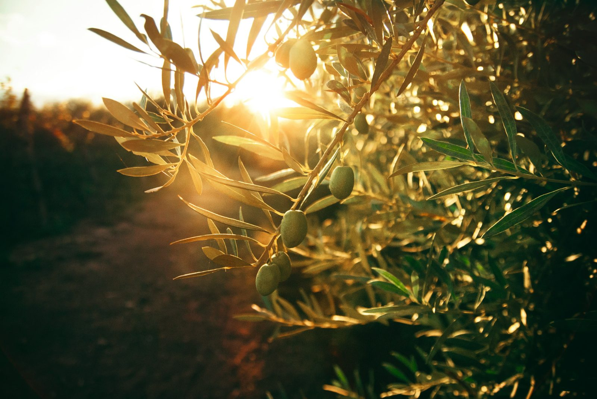
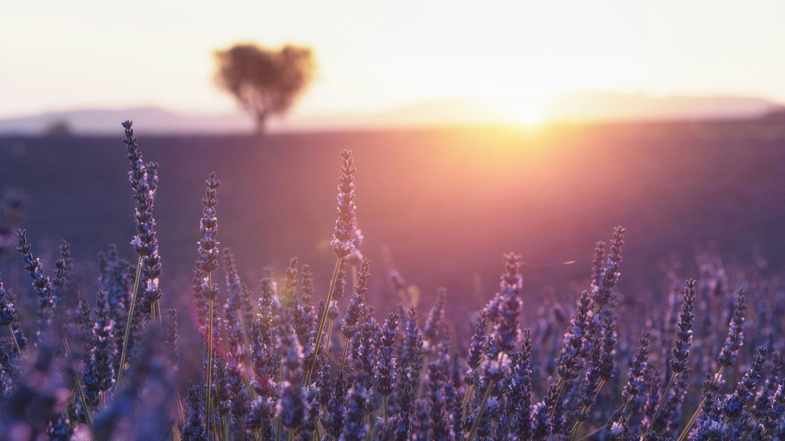
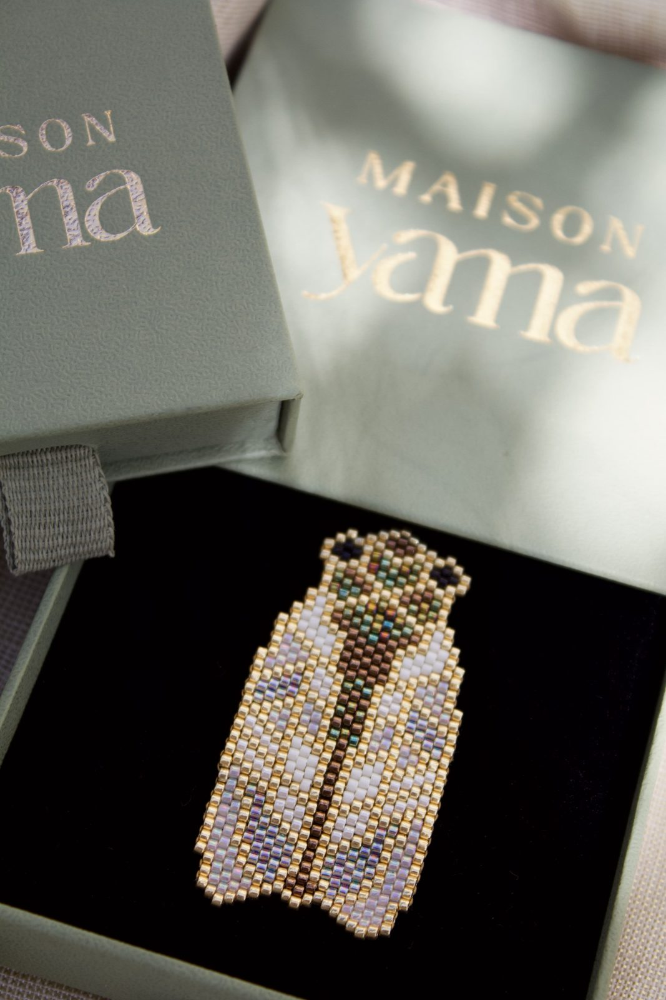

De l'observation au dernier point, chaque broche traverse les mêmes quatre temps.
Aucune machine, aucun moule. Une aiguille, du fil, des perles de rocaille — et le temps qu'il faut.
Les champs, les haies, les toits du village. On note une posture, un éclat de plumage, la courbe d'une tige — le motif existe avant la première perle.

Le dessin fixe la silhouette, puis vient la palette : des perles de rocaille triées par teinte et par finition — mates, nacrées, irisées — pour capter la lumière comme le ferait le vivant.

Chaque perle est cousue à sa voisine, rang après rang, jusqu'à ce que le motif prenne corps. Une cigale en demande 599 — et plusieurs heures de tissage ininterrompu.

Le tissage est doublé pour tenir sa forme, l'attache est cousue à la main, puis la broche rejoint son écrin vert amande — dernière étape avant de quitter l'atelier.

Chaque broche est entièrement tissée à la main. Les couleurs et les textures sont choisies pour capter la lumière et se révéler au regard.